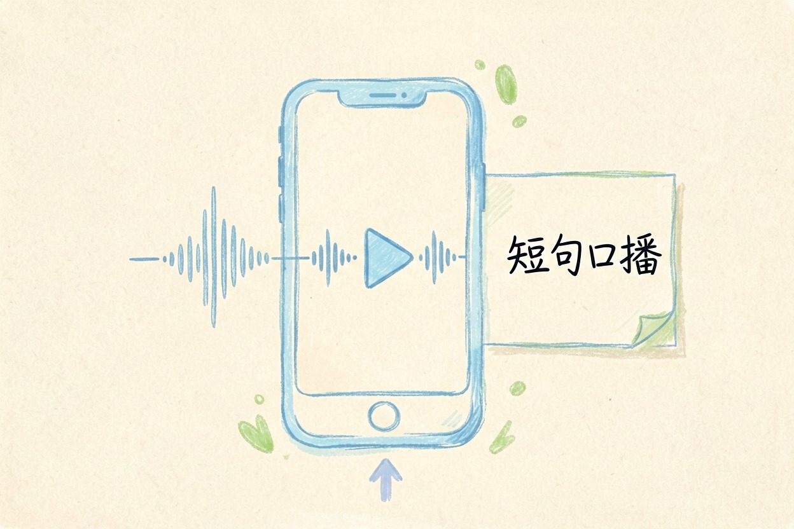

AI 配音工具哪个好？5 款中文对比与适用场景
AI 配音没有通吃答案，先分清口播、长解说、商用还是克隆，再挑工具，免费形态和商用授权要看清。
AI 配音工具哪个好？先分四类需求

AI 配音工具哪个好，先别急着比名字，因为「AI 配音」名下混着完全不同的需求。短口播、长解说、专业商用、声音克隆，四类的时长、音色要求和免费策略完全不同。先分清你要做哪种，再挑工具。否则很容易选错。下面按四类需求分别给结论，对照你自己的场景对号入座。
短视频口播：剪映 AI 门槛最低
做短视频口播，剪映的 AI 配音门槛最低：剪辑软件内置，国内直接可用。基础音色够用，免费额度做短句够用。适合不想再装一套工具、只求「能念出口」的人。如果你的视频还需要配画面，可以参考 AI 视频生成工具哪个好那篇。口播稿和普通文案不一样，要短句、能念顺。
长文本与商用：魔音工坊、讯飞配音、腾讯智影
长解说、有声书、商用配音，需求从「能念」变成「好听、能商用」。魔音工坊、讯飞配音、腾讯智影各有侧重：有的音色丰富、有的中文识别稳、有的和数字人绑定。商用前要单独确认授权，免费额度通常不含商用。五款工具一句话对比：
| 工具 | 归属 | 擅长方向 | 免费形态 | 国内可直接用 | 商用注意 |
|---|---|---|---|---|---|
| 剪映 AI | 字节{:target="_blank"} | 短视频口播 | 基础免费 | 是 | 看授权 |
| 魔音工坊 | 国内厂商 | 长文本、音色多 | 有免费档 | 是 | 需确认 |
| 讯飞配音 | 科大讯飞 | 中文稳、专业 | 有免费档 | 是 | 需确认 |
| 腾讯智影 | 腾讯 | 数字人+配音 | 有免费档 | 是 | 需确认 |
| ElevenLabs{:target="_blank"} | 海外 | 拟真、多语种 | 有免费档 | 需额外条件 | 单独算 |
魔音工坊的运营主体、免费额度和商用授权条款，以 moyin.com 官网当前说明为准。
拟真与多语种：ElevenLabs 与海外选项
想要音色拟真、或者做多语种内容，ElevenLabs 是常被拿来当参照的一款。是不是真比国内工具强，拿同一段稿子两边各生成一遍，戴上耳机听最直观。但国内访问可能需要额外网络条件，价格也偏高。它适合专业内容制作者。普通人做口播用不上。涉及他人真实声音的克隆，必须先取得授权。否则有侵权风险。这一点和「免费」无关，是法律问题。
选之前的三个现实问题
免费形态要看清楚：按字符、按时长、按条数，三种都有。各工具属于哪种，要查官方说明。商用授权必须单独确认，多数免费额度不含商用。还要看是否支持导出，不能导出等于白做。最后提醒：别被「免费」噱头骗去绑卡。免费额度通常只够短文本试听，长文本、商用、无损导出基本都要付费。用下面这段提示词，把文案改写成能念出口的口播稿：
请把下面这段文案改写成适合 AI 配音朗读的口播稿：
要求：1) 短句为主，每句不超过 20 字；2) 去掉书面连接词（首先/此外/综上所述）；
3) 关键数字念法写清楚（如"12%"写"百分之十二"）；4) 标注需要停顿的地方用【停顿】；
5) 保持原意。原文：【粘贴】工具价格与免费额度可能变动，实际以各工具官网当前说明为准。 AI 配音工具哪个好？先按需求分类再选，别被「免费」噱头骗去绑卡，商用和克隆先确认授权。
本文信息核对于 2026-08-05。AI 产品的价格、免费额度与功能变动频繁，实际以各工具官网当前说明为准。